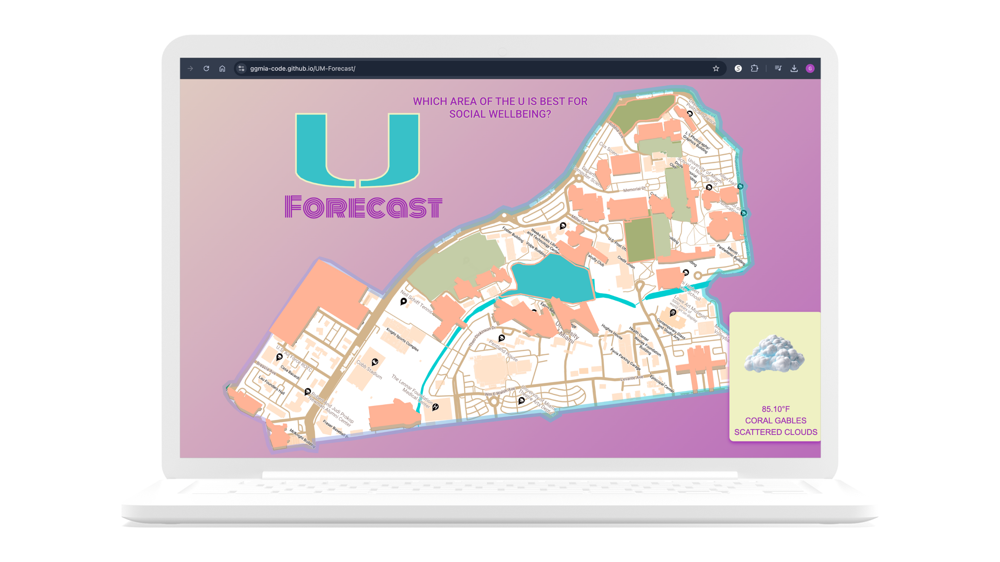
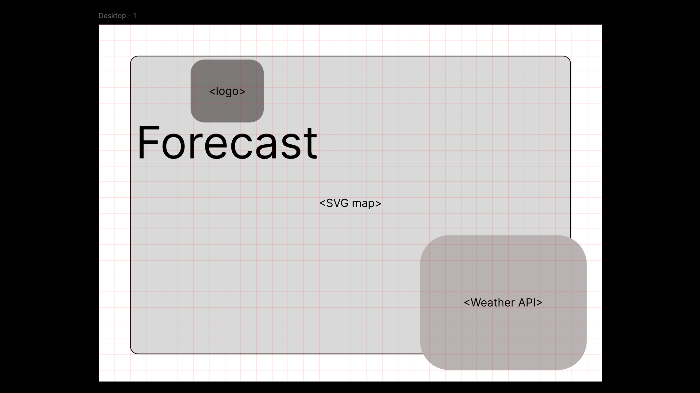
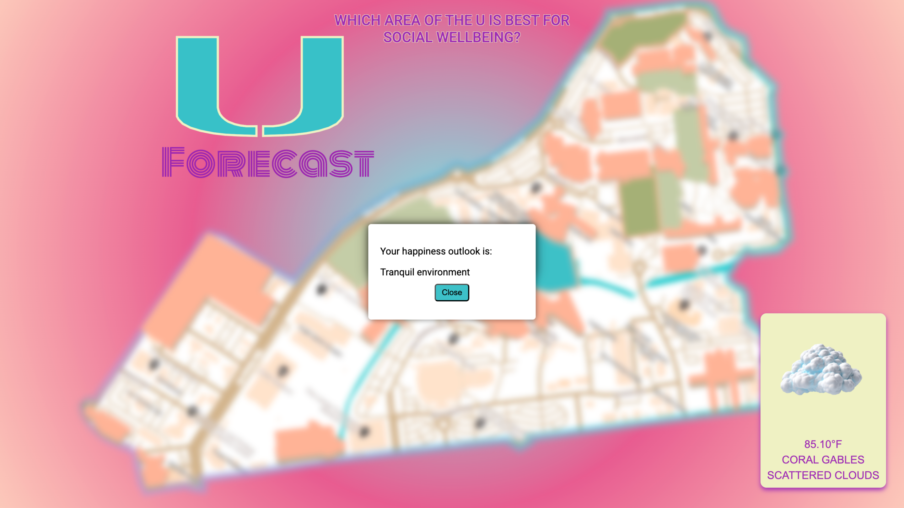
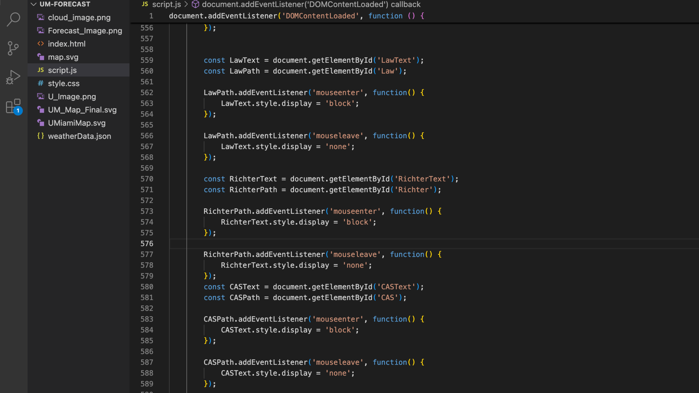
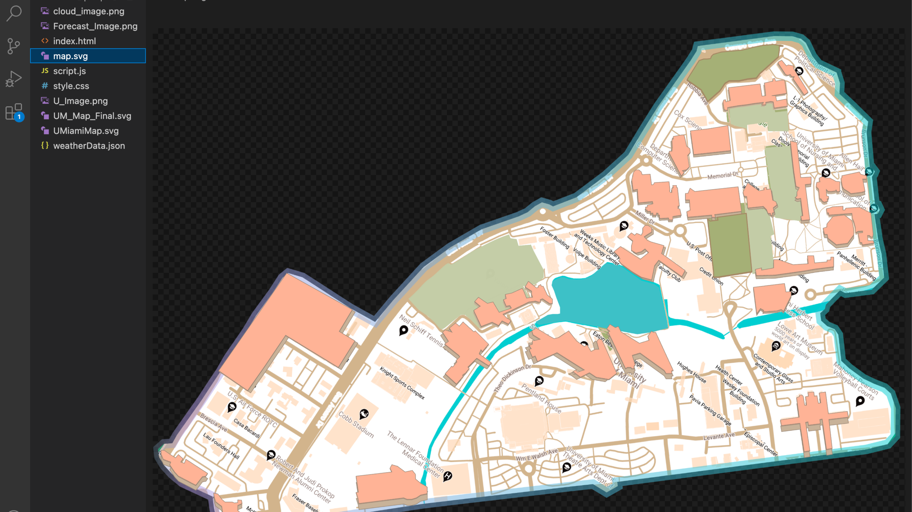

Role
duration
Tools
An interactive web app visualizing student sentiment across campus through a dynamic SVG map and real-time weather updates.

Students often associate places on campus with moods—stress at the library, peace in the gardens—but there’s no way to visualize this. UForecast turns these emotions into a dynamic, map-based experience that also provides real-time weather insights.




Tech Used:
Key Features:
Home Page
Pet Matching
Pet resources
Track pet care goals
MapKit-based nearby places
Pet profile and photo uploads
PetPals gave us experience building a full iOS app from idea to prototype. We learned how to:
• Work with Swift UI and Apple Frameworks
• Prioritize user feedback through usability testing
• Design with inclusivity and intention
We hope to continue developing the backend and expand features post-launch.
Designing Pet Pals taught me the importance of accessibility, community-building, and iteration. Through hands-on prototyping and user testing, I learned how to craft inclusive experiences rooted in empathy, delight, and real-world needs.